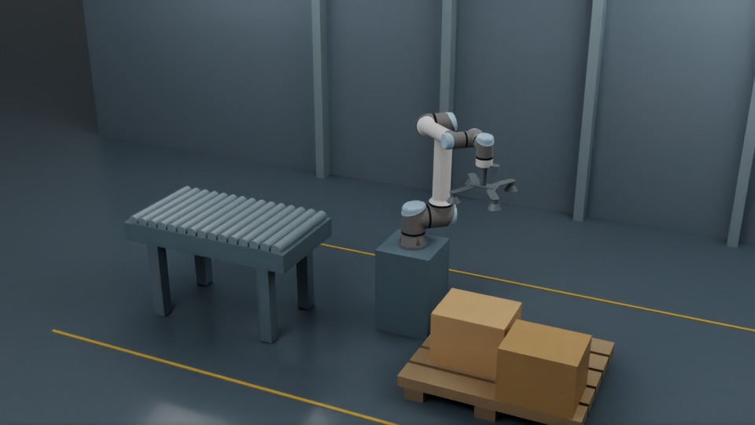
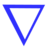

자연어 질문에서 작업 조건, 제약, 확인할 결과를 추출합니다.
AXON / PHYSICAL AI
물리 시뮬레이션으로
답하는 AI
Axon은 자연어 질문을 시뮬레이션 조건으로 바꾸는 산업용 LLM입니다. 로봇의 작업 범위부터 차량의 주행 환경까지, 모델이 고른 실험의 결과를 수치와 화면으로 보여주는 서비스를 개발하고 있습니다.
무료 데모 보기 Axon의 작동 방식커피 상자를 팔레트에 옮길 로봇과 흡착 그리퍼를 비교해 줘.

UR10e + PowerPick비교한 5개 구성 중 2개 적재 완료
액슨 실험실
커피 상자 팔레트 적재 부품 비교
나
밀봉이 끝난 커피 상자를 팔레트에 올리려면 어떤 로봇과 흡착 그리퍼를 조립하는 게 제일 좋겠는지 추천해 주고, 직접 시뮬레이션 돌려줘.
액슨
액슨
- 시뮬레이션 환경 확정 중
- 사용할 부품 구성 검토 중
사용할 부품이 정해지셨나요?
나
아니요, 추천해 주세요.
액슨
사용할 부품 구성 파악 중
액슨
주황 레인: 마찰계수 0.10청록 레인: 마찰계수 0.65
실험 조건
물류 컨베이어의 18° 경사 구간에 12 kg 포장품을 놓고 두 접촉면을 비교했습니다. NVIDIA Isaac Sim의 PhysX 강체 접촉 모델로 이송 정지 시 포장품이 초기 위치를 유지하는지 확인했습니다.
부품 조합별 결과
상자 2.5 kg, 동일한 집기 및 배치 위치. 관절 이동량은 여섯 관절이 한 사이클 동안 회전한 각도의 합입니다.
| 부품 조합 | 적재 | 최대 오차 | 관절 이동량 | 영상 |
|---|
실제 사례와 재현 범위
Napco Brands가 도입한 커피 상자 적재 공정을 참고했습니다. 로봇과 그리퍼는 공개 모델을 사용했고, 설비 배치와 상자 조건은 비교용으로 정했습니다. 목표 경로에서 흡착면의 위치 오차가 5 mm를 넘거나 방향 오차가 2도를 넘으면 집기를 생략했습니다. 통과한 조합은 이송 중 상자를 그리퍼에 고정하고, 놓은 뒤 Isaac Sim에서 중력과 접촉을 계산했습니다. 진공 성능과 설비 간 충돌은 이 시험의 평가 항목에 포함되지 않습니다.
액슨 실험실 / BeamNG.tech
차량 시뮬레이션 데모
도로에 떨어진 물체를 낮과 밤에 얼마나 분명하게 식별하는지 본 48건의 실험입니다.
나
BeamNG에서 기록한 주행 실험을 기준으로, 낮과 밤에 도로 위 장애물을 얼마나 잘 식별했는지 비교해 줘.
액슨
낮 24건과 밤 24건의 식별 점수를 비교했습니다. 평균은 낮 4.54점, 밤 3.13점으로, 밤 실험에서 1.42점 낮았습니다.
액슨
두 조건의 결과를 그래프로 정리했습니다. 서로 다른 장애물이 포함된 실험이라 조명만의 영향으로 해석하기는 어렵습니다.
낮 / 24건4.54점4.54점
밤 / 24건3.13점3.13점
BeamNG 주행 기록 48건을 바탕으로 집계
Axon
질문에서 시뮬레이션 결과까지
“팔레트가 500 kg이면 지지대가 얼마나 휘어?” Axon은 질문에서 하중과 검토 대상을 읽고, 구조 해석에 맞는 모델을 고른 뒤 계산에 사용한 조건과 결과를 함께 보여주는 구조로 설계하고 있습니다.
기업의 공정 맥락과 검토할 물리 현상을 파악합니다.
재료, 형상, 하중에 맞는 모델을 고릅니다.
설정한 조건으로 시뮬레이션을 실행하고 결과를 검토합니다.
실험 조건과 계산 결과를 설명하고 결과 화면을 함께 제공합니다.
제조와 물류 현장의 시뮬레이션 사례
BMW Group
공장을 짓기 전에 로봇 배치를 검증
헝가리 데브레첸 공장은 양산에 앞서 차체 공정의 각 단계를 디지털 트윈에서 시험했습니다. 약 1,000대의 로봇을 어디에 배치할지 검토하고, 검증한 생산 라인 배치를 실제 공장에 반영했습니다.
BMW Group 발표IDC
운영 중인 소포 분류 설비의 제어 교체
규격이 제각각인 소포를 가상으로 투입해 분류기 제어 로직을 현장에 가기 전에 시험했습니다. 개조와 시운전은 5주 만에 끝났습니다. 현장 시운전만 진행한 유사 프로젝트는 8주가 걸렸습니다.
Siemens 사례Hugo Beck
주문 크기에 맞춰 봉투를 만드는 포장기
상품 크기에 맞게 종이 봉투를 만드는 장비를 제작 전에 디지털 트윈으로 시험했습니다. 조립 단계의 장비 시운전 시간이 절반으로 줄었습니다.
Siemens 사례기업 도입
현장 미팅부터 적용까지
첫 미팅에서는 작업을 직접 보고, 현장 담당자와 가장 먼저 손볼 공정 하나를 정합니다.
현장 방문
설비와 작업 동선을 살펴보고, 문제가 언제 반복되는지 듣습니다.
공정 진단
도면과 실제 작업 조건으로 현재 공정을 모델링합니다.
파일럿 검증
하중이나 설비 설정을 바꿔보고, 기존 조건과 결과를 비교합니다.
현장 적용
검증한 조건을 기존 설비에 적용하고, 담당자와 변경 전후를 확인합니다.
회사 소개
Axon Dynamics
Axon Dynamics는 언어 모델과 물리 시뮬레이션을 연결하는 산업용 AI를 개발합니다. 공장과 물류센터를 직접 방문해 담당자와 먼저 시험할 공정을 정하고, 실제 설비의 치수와 작업 조건을 반영해 변경안을 비교합니다. 프로젝트에서 쌓인 공정 기준과 검증 결과는 고객사 팀이 사내 Axon에서 다시 활용할 수 있도록 구성합니다.
시뮬레이션 도구
 Unity
Unity NVIDIA Isaac Sim
NVIDIA Isaac Sim
 Gazebo
Gazebo- Webots
 CoppeliaSim
CoppeliaSim Unreal Engine
Unreal Engine Ansys
Ansys- COMSOL

OpenFOAM